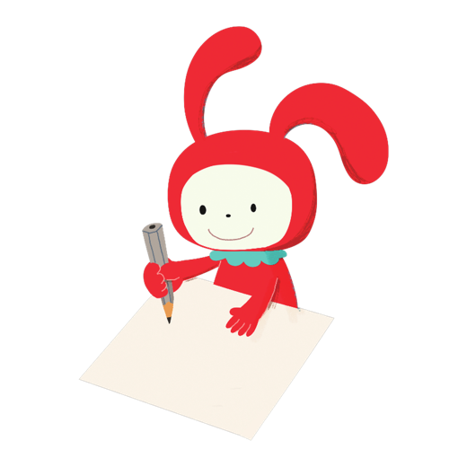
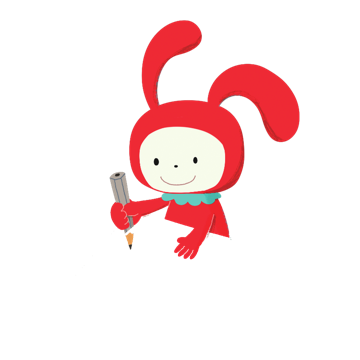
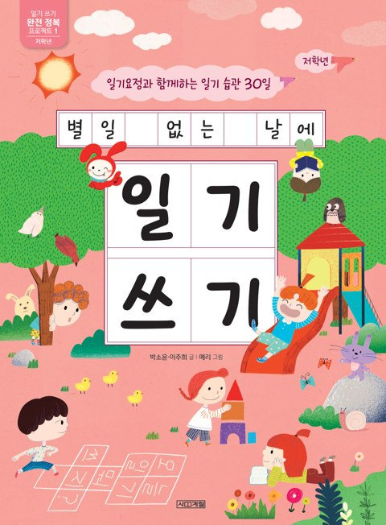

『별일 없는 날에 일기 쓰기』 38~39쪽
책을 읽고
감정 단어 복습하기
기분 좋은 감정 단어들 ①

“재미있었다.” 말고 내 마음에 딱 맞는 말, 얼마나 알고 있나요?
일기요정과 함께 기분 좋은 감정 단어 12개를 복습해 봐요!
1 점검아는 단어
골라 보기
골라 보기
2 만나기그림으로
다시 보기
다시 보기
3 빈칸어울리는
단어 넣기
단어 넣기
이 단어, 알고 있나요?
감동이다.
솔직하게 골라도 괜찮아요. 모르는 단어는 다음 단계에서 그림으로 만나요!
그림으로 단어 만나기
감동이다.
우아, 12개를 모두 안다고요?
정말 멋져요! 그럼 바로 빈칸 채우기로 실력을 확인해 볼까요?
그림으로 한 번 더 보고 싶으면 ‘그림 보기’를 눌러요.
빈칸에 어울리는 단어는?
어울리는 단어가 여러 개일 수도 있어요.

단어 카드를 눌러 빈칸을 채워 보세요!
감정 단어 복습 완료!
0원래 알던 단어
0새로 만난 단어
0빈칸 채운 문장
오늘 내 마음과 가장 가까운 단어는?

감정 단어가 더 궁금하다면? 『별일 없는 날에 일기 쓰기』에는 기분 좋은 감정, 불쾌한 감정, 슬프고 우울한 감정을 나타내는 단어가 더 많이 나와요. 일기요정과 30일 동안 일기 습관을 길러 봐요!